成年人找回自由最好的办法，从来不是辞职
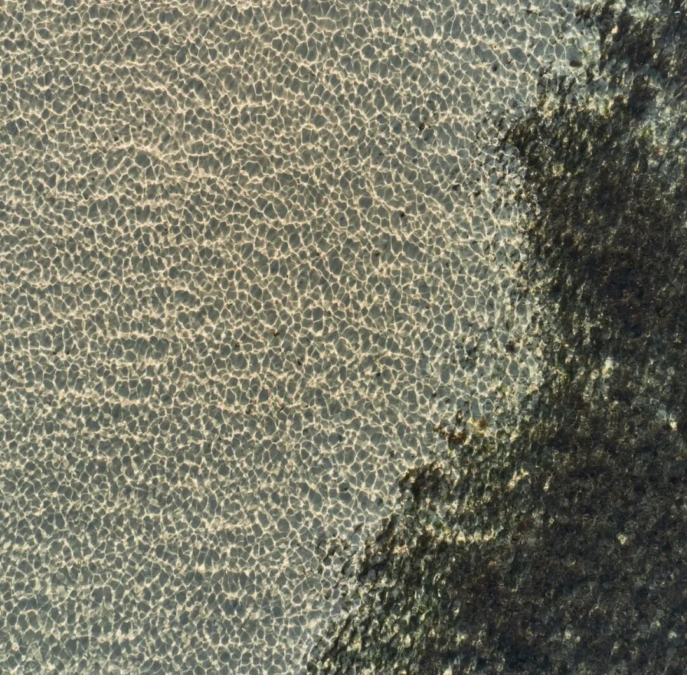
最近所有人都在辞职，
就连英国首相，也宣布不干了。
周末在深圳出差，团队里做了十几年的跟我说太累了想休息一段时间，做了一年多的说想出去看看世界。
奇怪的是，辞职之后，他们并没去遥远的国度旅行，也没有去实现什么未竟的理想，甚至连改行都懒，只是做做运动、逛逛公园、喝杯咖啡，享受无所事事的每一天。
辞职 —— 好像成了一条捷径，帮人们摆脱长期压力和疲惫堆积出来的职业倦怠，成了当下找回自由的途径。
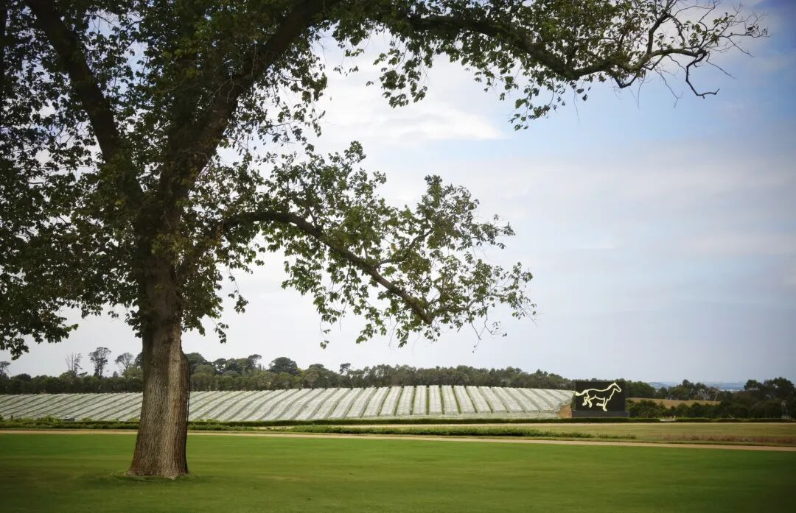
Pt Leo Winery@Mornington Peninsula休假时，我也常无所事事过一天在大自然里看看艺术作品还能喝几杯当地酿的葡萄酒喝多了，公园草坪上的马仿佛从画框里一跃而起
年轻时，我也以为一切都和职业有关。换一份工作，仿佛就能换一种活法。
可年岁渐长，面对越来越复杂的局面，最终意识到工作不过是我们人生的一部分而已。对中年人来说，找回自由最好的办法，从来不是辞职。
每个人都有自己的路要走，留下来，不一定就是勇敢；离开，也不一定就是逃避。
这世上，本就没有绝对正确的答案。
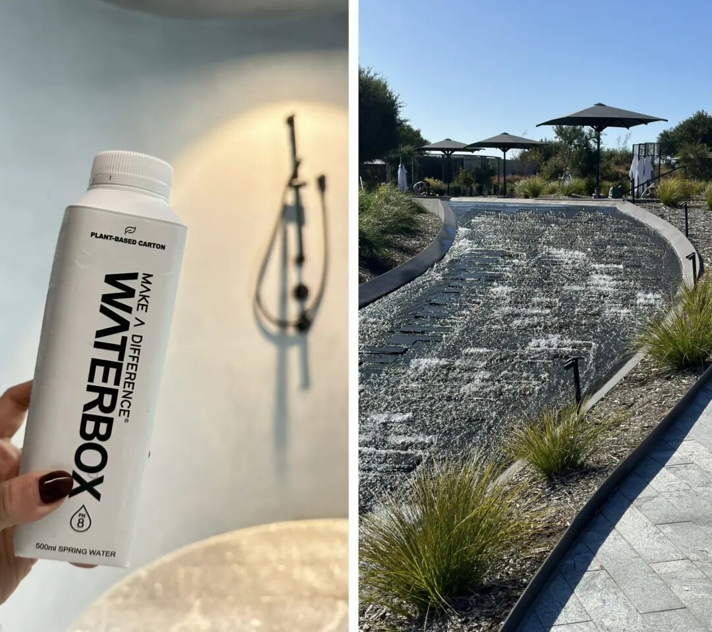
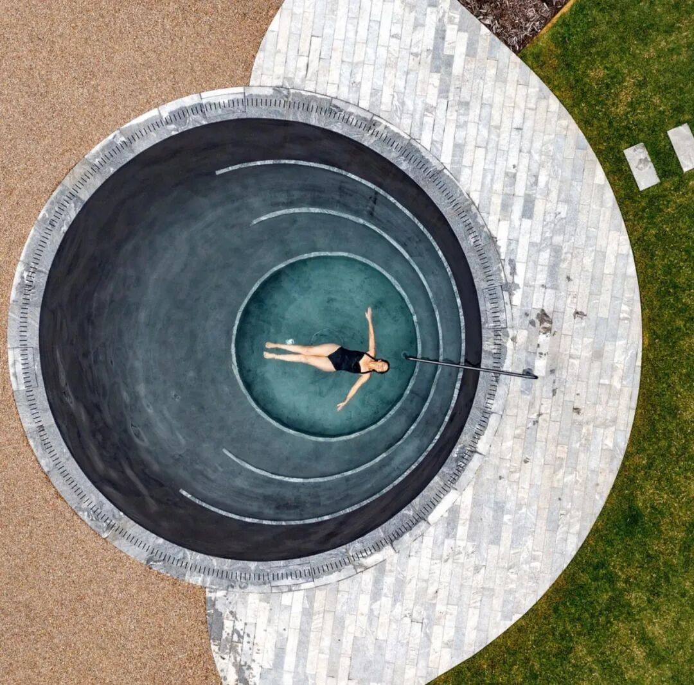
酒庄隔壁的Albathermal Spring是澳洲有名的野奢温泉度假村富含矿物质的池水来自地下深处的天然地热含水层如果哪天我辞职了就在这里躺一天什么都不干泡在温泉里眺望柔和的丘陵
最近不止团队在辞职，连我家阿姨都接连换了四波。又恰逢父亲大人住院，我一边维持着工作和家庭的正常运转，一边招聘人手，一边陪爸爸手术、康复。更加雪上加霜的是，我还被传染了两次流行病毒，生活整个一团乱。所幸有亲友和同事支持，靠着团队的力量，一切才以最快的速度回到正轨。
所以啊，中年人面对接踵而至的困难，恐怕唯有硬扛吧？
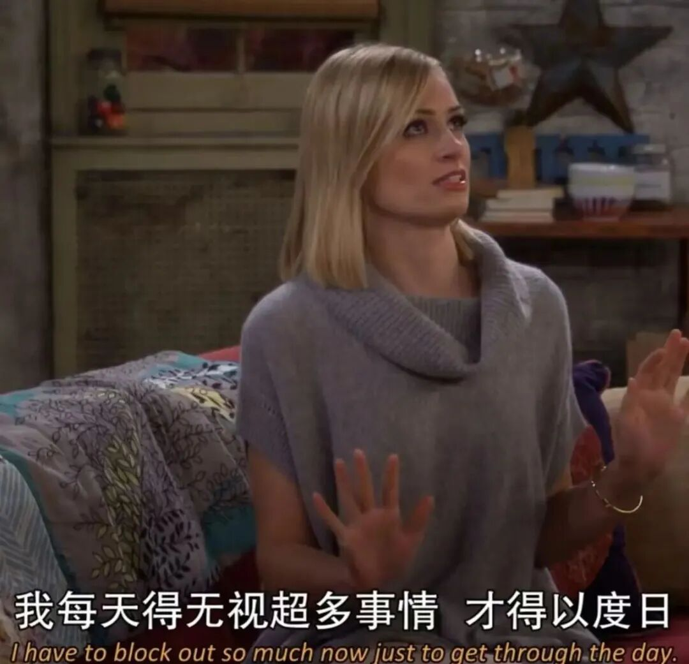
很多时候，旁人会不理解：既然那么痛苦，为什么不离开？换个轻松的活法不好吗？
只有真正身处其中的人才知道，不是离开就能解决所有问题。
没有任何一种方法，可以一次性把生活的难题全部清零。
Life is a package.
好的坏的，你都得收下。
当你深陷混乱时，还能清醒地告诉自己：不要被杂乱无章的外部力量裹挟；危机过去后，能第一时间重新为自己找回节奏。
这才是属于中年人，真正的自由。
问我是如何保持好心态，随时都能找回自己的节奏？
分享一些小小心得：
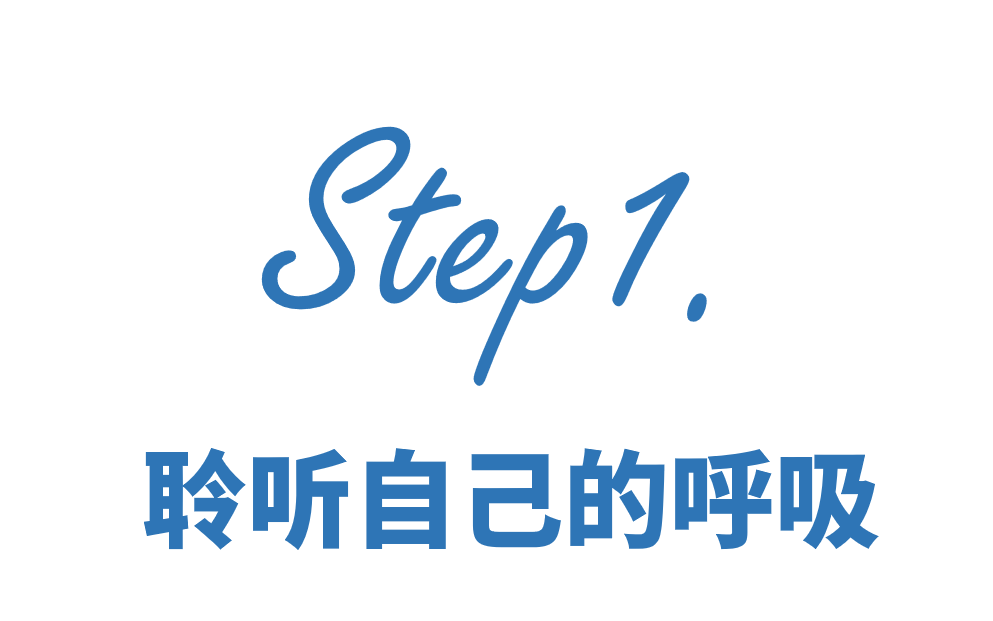
大部分人在进行重大人生重塑时，包括分手、移居、辞职 —— 决心改变，往往从剪短发、健身开始，而我觉得最微小的重塑，是聆听自己的呼吸。一个内心强大的人，呼吸不会乱，当你的呼吸浅短或急促，那么此刻一定有什么在困扰着你。每天给自己留几分钟，于安静无人处，聆听自己的呼吸：在“呼吸”这个最小的当下生命循环里，在这宇宙能量的吞吐中，你听见自己的心跳，感受到血流的速度，有些你从未意识到的念头会浮现到水面上。内心真实的声音从未如此鲜明，你也从未如此贴近自己。
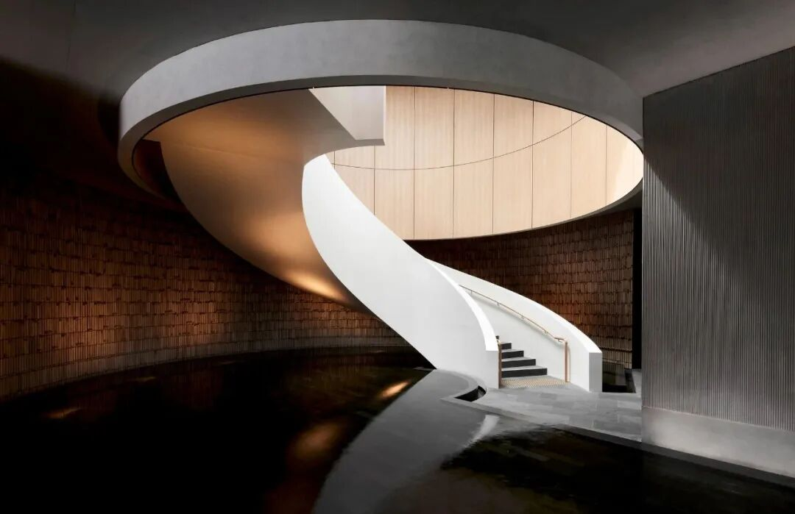
虽然人生有很多痛苦，但躺在四季如春的resort你都会释怀的，会觉得当时真是吃饱得撑的“我在呼吸” 是一件多么了不起的事啊！一切混乱与挑战在此面前都变得不值一提
在“呼吸”这个最小的生命循环里，我们可以自由地成为自己。真正决定人生的，不是某个遥远的终点，而是每一个具体的“此刻”。在此刻呼吸着，感受自己的潮汐，写下自己的诗篇，重塑自己不可捉摸的心灵边界。呼吸是最小的潮汐，呼吸是最短的诗篇，呼吸是宇宙的吞吐，呼吸是经过我们的歹物，这一切都是我。
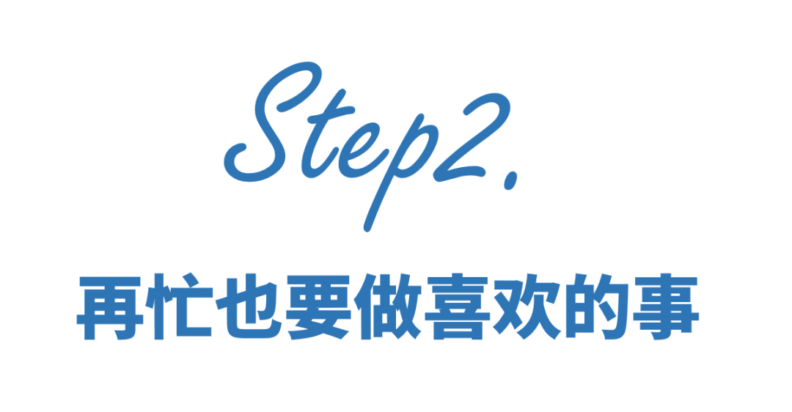
再忙也要给自己留一点“做喜欢事情”的时间。上海的黄梅每天都在下雨，难得放晴的清晨，我会在被梧桐树覆盖的上海街头骑一小段路。我从未想过自己会脱下高跟鞋，换上牛仔裤，戴上棒球帽，在某一个清晨，从家门口骑去公司。这是现在我感到最舒适的时刻，是对自由最诚挚的拥抱，胜过了宴席、欢聚、旅行、购物、努力上进所带来的成就感。只是单纯地喜欢这件事情，如此奇妙地被治愈。
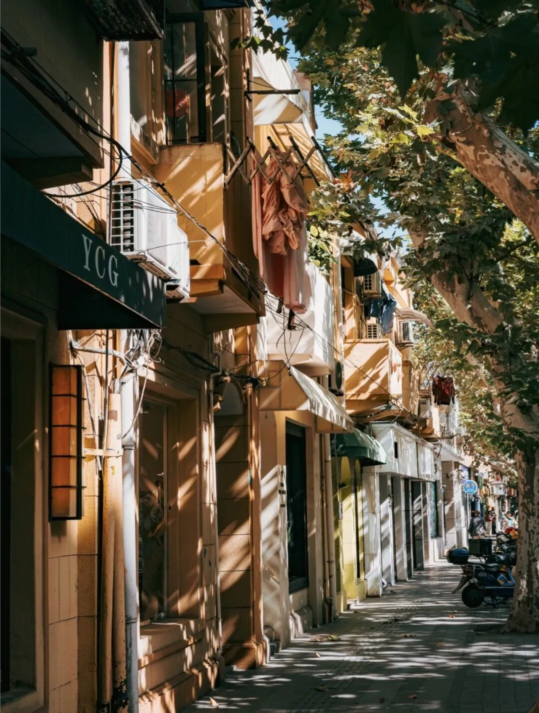
小小的马路，被两侧茂盛的梧桐树笼罩着，因为街道很短，适合骑着单车穿行，米色矮墙投射着树影幢幢，时间在这里是可以被消遣的。甚至有一种停滞的错觉，仿佛1930年也并没有过去太久。从华山路、兴国路、武康路再到长乐路，这里没有激进的商业模式，那么一小寸土地，自成宇宙，很有点乌托邦似的存在。这里的居民慢悠悠地散步遛狗，或坐在街边喝杯咖啡，风花雪月的态度，对这个时代来说是一种无声的抵抗。
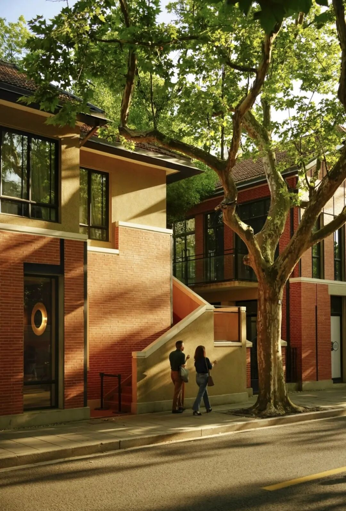
很多人对上海的第一印象是“贵”。尤其是梧桐区，“小资”得离谱，到底要开多少咖啡馆和 Bistro 才够啊？一杯咖啡配块蛋糕就上百元，一顿漂亮饭吃掉年轻人一个月工资，30平米的老破小掏空了一辈子的积蓄。要是你只盯着那些价目表，那魔都确实是个碎钞机。但如果你在一个夏天的周末清晨醒来，愿意短暂忘却紧凑的工作日会议，提醒自己放下干涉他人命运的执念（哪怕这个人是你的父母妻儿），留给自己一颗无旁骛的"闲心"，在梧桐树下散散步发发呆，就会发现，这里的氛围可以让你更自由地成为自己。
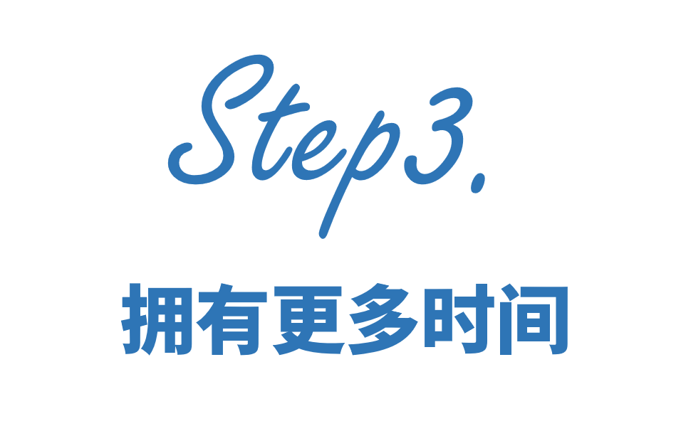
有一阵子，我很喜欢夜晚，觉得很多来不及在白天思考事情，在夜里会变得更诚实。这次去深圳住在Andaz，南山区粤海街道10多平方公里聚集100多家上市企业，人工智能、互联网、通信、生物医药的产业集群总市值超5万亿。在Lounge和失散多年的酒友Z总喝酒，他投的核聚变今天完成了数亿元的天使轮融资，我恭喜他，但我说自己退市很久了，晚宴酒局早早结束，为了早起。因为夜晚有个局限：它只会把情绪放大，把犹豫放大，把孤独放大。让人误以为世界就是这样安静而漫长，没有出口，也没有新的方向。但清晨不一样，街道还没有完全醒来，没有等我想明白，也没有等我准备好，天就亮了，世界已经在往前走了。不需要做出多么重要的决定，也不需要把所有事情解决完，不必问昨天发生了什么，也不用百分百准备好，只要时间继续往前，每个人都将拥有一个崭新的清晨。它每天都自然而然地出现，阳光公平地照在所有人都脸颊上，连呼吸的空气都是全新的。
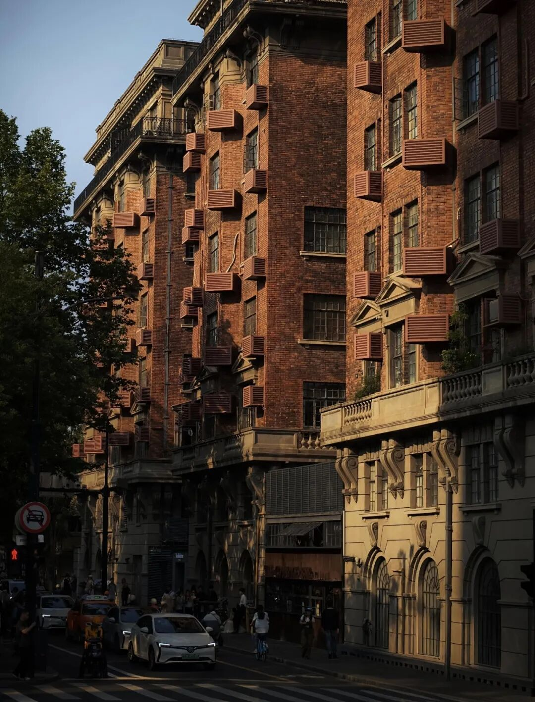
我和Z总聊《金刚经》，意外发现我们这些年都藏着赵孟頫的版本。爸爸住院的那段时间，我每天都六点起床，叮嘱阿姨给全家人做一些营养又美味的菜肴，然后自己再抽空会抄经，不多不少就三行，像一种找回自由和节奏的仪式，有时候人生其实就是一连串这样的清晨。有些清晨带着疲惫，有些清晨带着失落，有些清晨甚至带着一点难以言说的悲伤。你起床，洗脸，走出门，像往常一样去生活，好像什么也没有改变。但其实已经不同了。每一个新的清晨，都会悄悄带走一点旧物，把夜里积累的沉重慢慢稀释掉。那些曾经看起来无法承受的事情，慢慢变成心底的记忆。让人可以继续吃饭、走路、说话、微笑，继续在普通的日子里活着。这是一种很温和的拯救。不轰动，也不戏剧化。只是每天早上，光照进来，提醒你：生活还在继续。没有人要求你必须变得更好。也没有人规定你要走得更快。清晨只是告诉你，可以再走一天。不急着痊愈，不急着遗忘，不急着成为更坚强的人。你只需要起床，呼吸，出门，骑一小段路，开始新的一天。
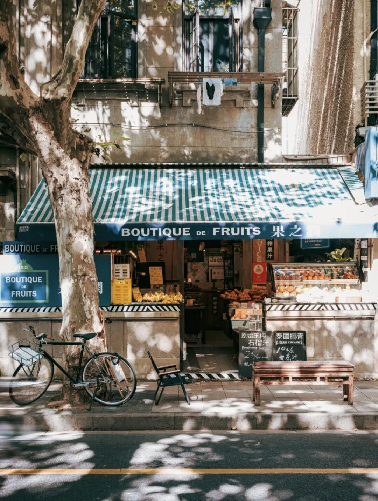
“再奢华的度假村，呆久了也会很无聊吧？就像再热爱的事业，做久了也会想辞职；再轰轰烈烈的恋爱，谈久了也会想分手人生的选择题，怎么选都会后悔，但有一件事不会让你后悔：就是无论选哪条路，你都掌握着真正的自由你不需要今天就走，但你需要拥有随时能走的能力
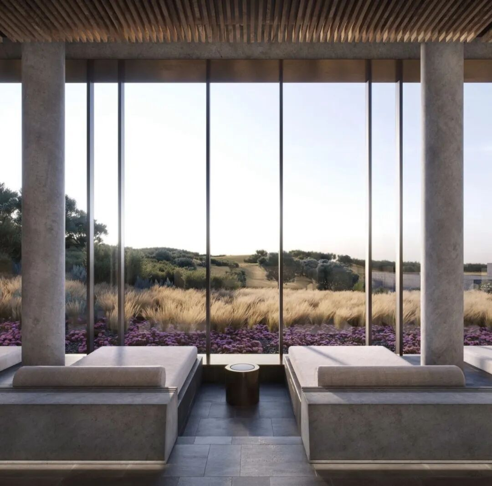
2026.07.12
——
END